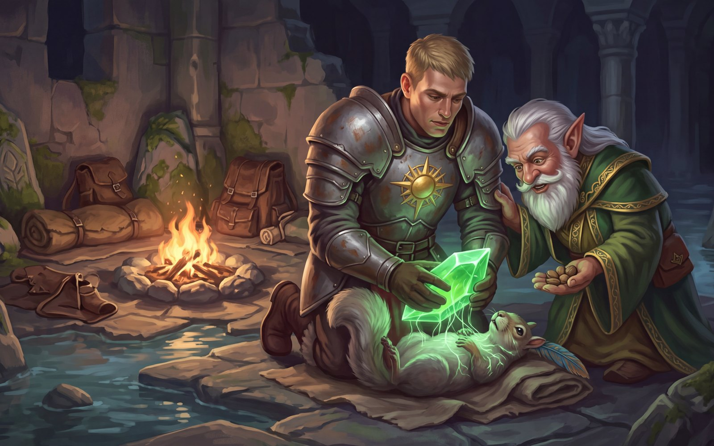
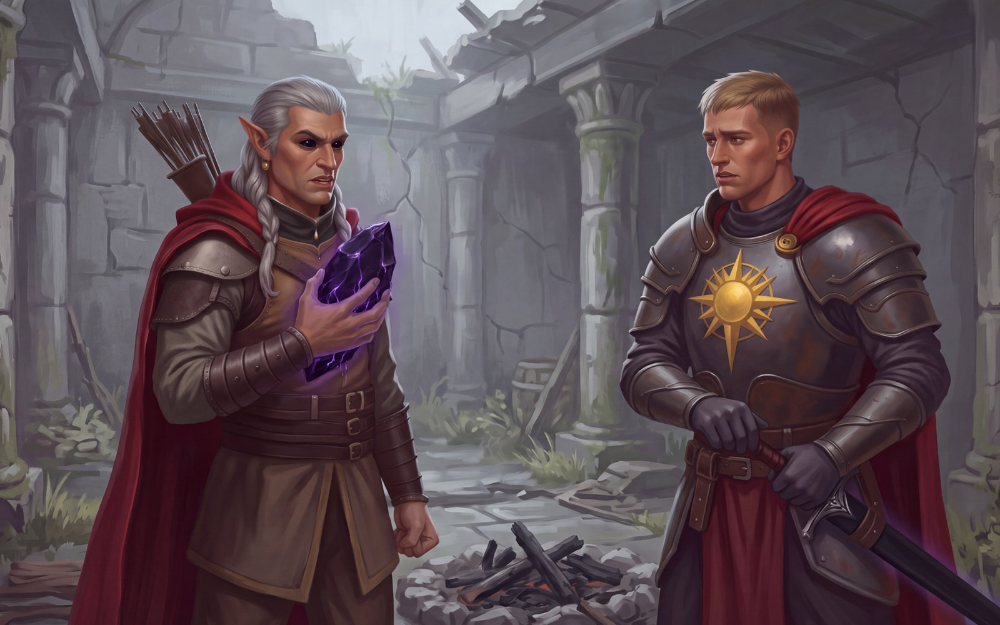
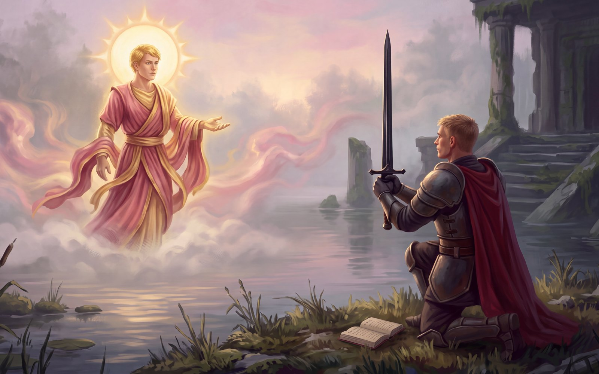
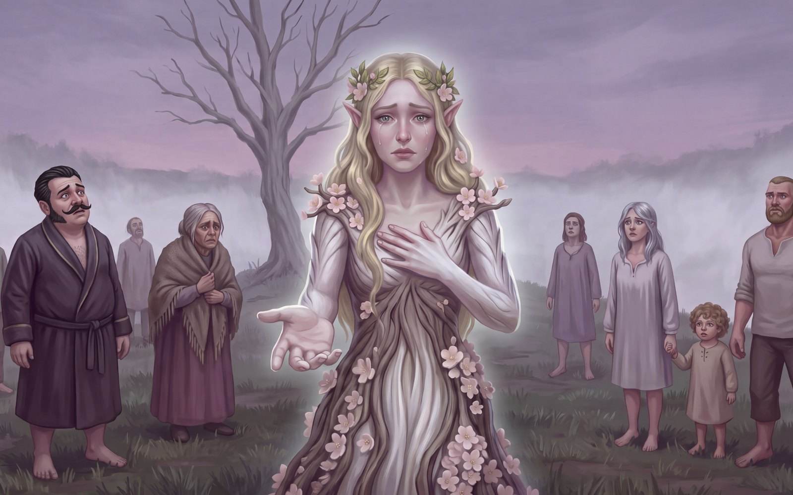
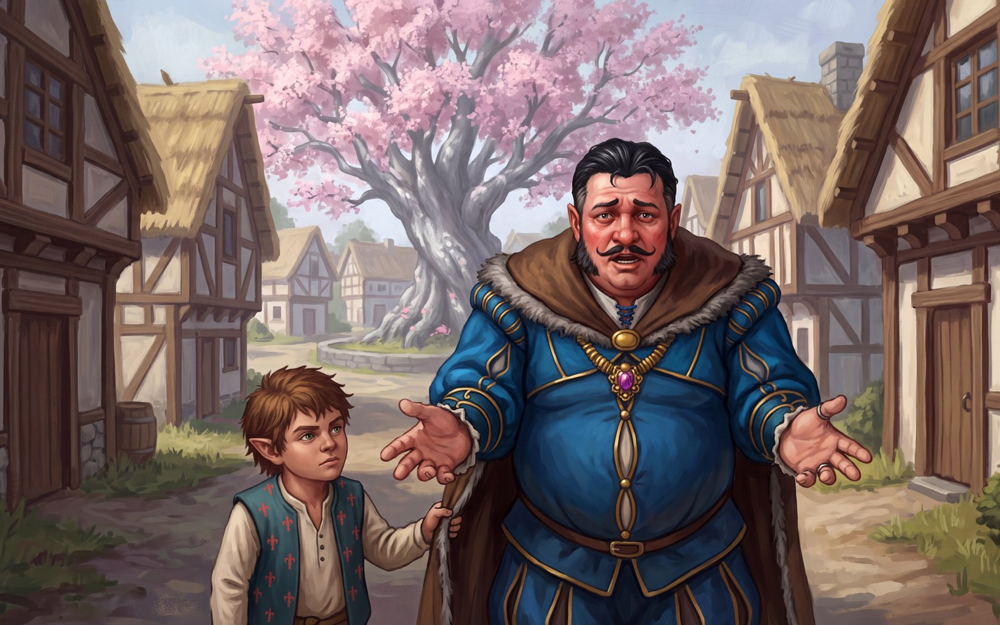
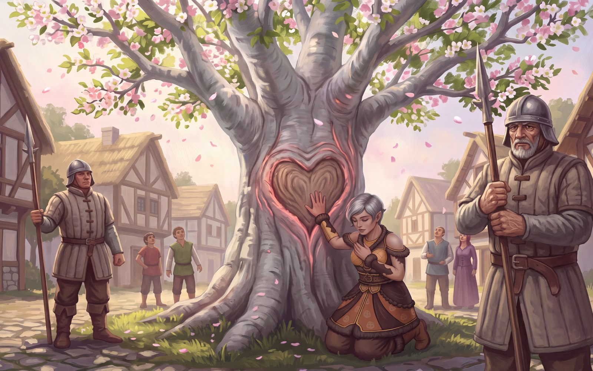
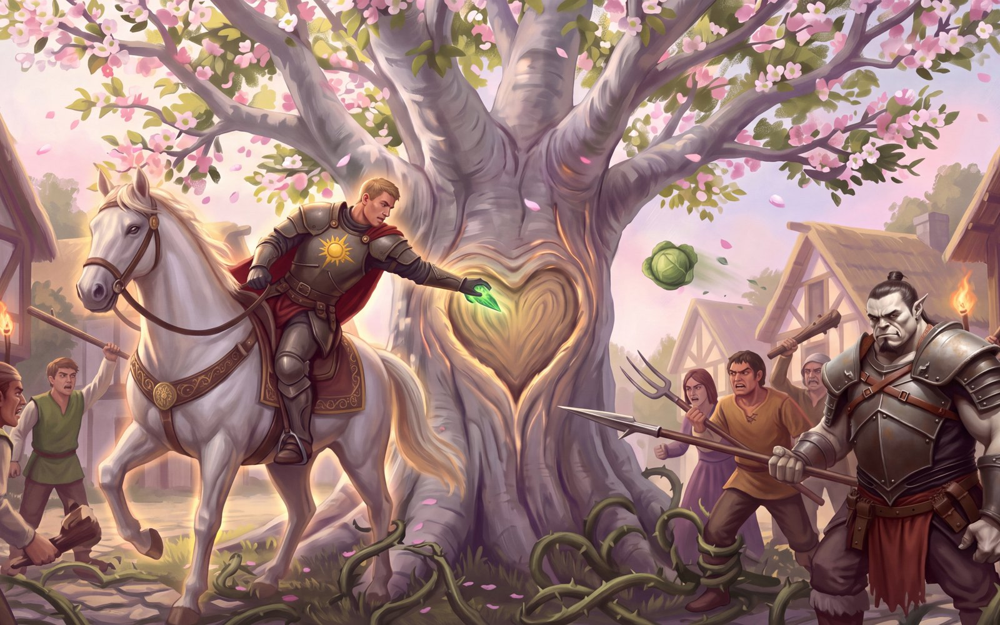
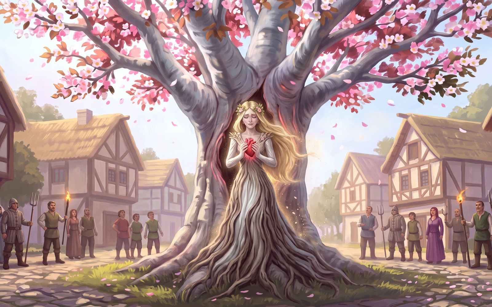
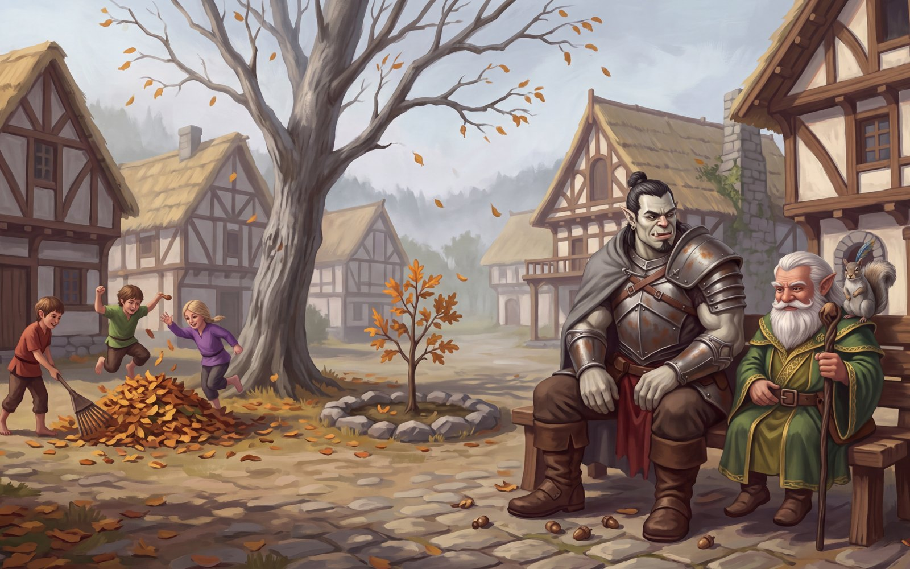

<!-- session-scribe player recap — The Broken Heart of Greenrest, Session 9 — 2026-09-29. PLAYER-SAFE BY CONSTRUCTION: written from transcript-public.md; nothing from gm-notes-*.md appears here. -->
<div style="margin:0;padding:24px 8px;background-color:#f4f1ea;">
  <table role="presentation" cellpadding="0" cellspacing="0" border="0" align="center" style="max-width:640px;width:100%;margin:0 auto;background-color:#fffdf8;border:1px solid #d8cfc0;border-radius:8px;">
    <tr><td style="padding:28px 32px 8px 32px;border-bottom:3px double #b3a284;">
      <p style="margin:0;font-family:Georgia,'Times New Roman',serif;font-size:13px;letter-spacing:2px;text-transform:uppercase;color:#8a7a5c;">The Broken Heart of Greenrest &mdash; Session 9</p>
      <h1 style="margin:6px 0 4px 0;font-family:Georgia,'Times New Roman',serif;font-size:26px;line-height:1.2;color:#3d3225;">The Heart Knot</h1>
      <p style="margin:0 0 14px 0;font-family:Georgia,'Times New Roman',serif;font-size:13px;color:#8a7a5c;">Tuesday, 29 September 2026</p>
    </td></tr>
    <tr><td style="padding:20px 32px 4px 32px;"><p style="margin:0 0 16px 0;font-family:Georgia,'Times New Roman',serif;font-size:15px;line-height:1.65;color:#4a3f30;font-style:italic;">On the last night of the Broken Heart, the Thornheart gave Pudgy back his life, and the Duskheart took Jetten's voice and used it to make Shar's final offer: drive Midnight into the Dreamer's tree, keep her trapped forever, and take five resurrections home. Invictus nearly said yes. His friends talked him back, and at dawn the Dawnfather came to him out of the fog and told him to bury the sword, and he did. At the edge of Greenrest the whole town shared the fourth dream, and the Dreamer asked to be set free. Oswin begged them not to, and a halfling boy changed his mind for him. Three mobs came down on the square with pitchforks and cabbages, and the party held them off with spells, threats and a pike while the four hearts went into the tree one at a time. The Dreamer stepped out, took her heart back, thanked them, and was gone. The mist came home to Greenrest, the town asked them to leave, and the paladin remembered his name: Thomas.</p></td></tr>
    <tr><td style="padding:4px 32px;">
        <h2 style="margin:14px 0 6px 0;font-family:Georgia,'Times New Roman',serif;font-size:18px;color:#6b5535;border-bottom:1px solid #e2d9c8;padding-bottom:4px;">A heartbeat for Pudgy</h2>
        <p style="margin:0 0 12px 0;font-family:Georgia,'Times New Roman',serif;font-size:15px;line-height:1.65;color:#4a3f30;">The fight was over and the drowned hall had gone quiet. Invictus turned the Thornheart over in his gauntlets and read what it could do: once between dawns, pressed to a body dead no more than ten days, <em>Raise Dead</em>. Gren did not need to ask twice.</p>
        <p style="margin:0 0 12px 0;font-family:Georgia,'Times New Roman',serif;font-size:15px;line-height:1.65;color:#4a3f30;">Invictus knelt by the little grey body and pressed the green shard to its chest. Green light threaded down into it like new roots taking hold. Pudgy shook, and quivered, and looked up weakly at the paladin, and then twitched his head round to Gren. <em>&ldquo;What happened? Oh, my goodness. Did we kill the dragon? Did we beat him?&rdquo;</em></p>
        <table role="presentation" cellpadding="0" cellspacing="0" border="0" width="100%" style="margin:6px 0 14px 0;">
          <tr><td style="padding:0;"></td></tr>
          <tr><td style="padding:6px 2px 0 2px;"><p style="margin:0;font-family:Georgia,'Times New Roman',serif;font-size:13px;line-height:1.5;color:#8a7a5c;font-style:italic;">Green light like new roots: the Thornheart's first dawn, spent on a temple squirrel.</p></td></tr>
        </table>
        <p style="margin:0 0 12px 0;font-family:Georgia,'Times New Roman',serif;font-size:15px;line-height:1.65;color:#4a3f30;">Gren told him the truth: the dragon was dead, and Honeysuckle and Pinenut had not made it. He gave him nuts. Pudgy took the news the way a small, brave creature does. <em>&ldquo;At least they did not die in vain. Will you promise to bury them outside, please, Master Gren?&rdquo;</em> Gren promised. They made camp in the geased druid's old quarters south of the great hall and slept. Jetten, who does not sleep, sat his trance and kept the watch.</p>
    </td></tr>
    <tr><td style="padding:4px 32px;">
        <h2 style="margin:14px 0 6px 0;font-family:Georgia,'Times New Roman',serif;font-size:18px;color:#6b5535;border-bottom:1px solid #e2d9c8;padding-bottom:4px;">The Duskheart speaks</h2>
        <p style="margin:0 0 12px 0;font-family:Georgia,'Times New Roman',serif;font-size:15px;line-height:1.65;color:#4a3f30;">They were packing up in the grey morning when Jetten's eyes glazed over and turned an inky, lidless black. The Duskheart had gone cold against his chest, and his hand had closed around it without his asking. When he opened his mouth, the voice was his. The words were not. Midnight glowed in its sheath the whole time he spoke.</p>
        <table role="presentation" cellpadding="0" cellspacing="0" border="0" width="100%" style="margin:6px 0 14px 0;">
          <tr><td style="padding:0;"></td></tr>
          <tr><td style="padding:6px 2px 0 2px;"><p style="margin:0;font-family:Georgia,'Times New Roman',serif;font-size:13px;line-height:1.5;color:#8a7a5c;font-style:italic;">The voice was Jetten's. The words were Shar's.</p></td></tr>
        </table>
        <p style="margin:2px 0 14px 0;padding:8px 14px;border-left:3px solid #d8cfc0;background-color:#faf6ec;font-family:Georgia,'Times New Roman',serif;font-size:14px;line-height:1.6;color:#5d4e38;font-style:italic;">Invictus. Killing my high priest was regrettable, but it is forgivable. My offer still stands. Take the heart shards and Midnight to the Dreamer's tree. Find the tree's heart knot, and plunge the blade into it. Midnight will drain the power from the tree and the shards. The Dreamer will be trapped. Each shard can grant you a resurrection, and the heart of the tree will grant you a fifth. The shards will be dead, but Midnight will have the ability to give you your five resurrections. You will win. You will get your family back. The town will win. The Dreamer's summer will remain in Greenrest forever. I will win. My will shall be done. Think carefully, Invictus. This is my last offer.</p>
        <p style="margin:0 0 12px 0;font-family:Georgia,'Times New Roman',serif;font-size:15px;line-height:1.65;color:#4a3f30;">Then it let him go. Jetten shook his head and found he remembered every word. <em>&ldquo;The Duskheart took control. I don't remember saying those words. I know I said them, but it wasn't me.&rdquo;</em> Midnight stopped glowing.</p>
    </td></tr>
    <tr><td style="padding:4px 32px;">
        <h2 style="margin:14px 0 6px 0;font-family:Georgia,'Times New Roman',serif;font-size:18px;color:#6b5535;border-bottom:1px solid #e2d9c8;padding-bottom:4px;">Is it evil to save a town?</h2>
        <p style="margin:0 0 12px 0;font-family:Georgia,'Times New Roman',serif;font-size:15px;line-height:1.65;color:#4a3f30;">Invictus did not dismiss it. The logic was hard to fault: one fae against a whole town that was living well on her captivity, and either way, he said, the heart would be gone and his family would stay dead. And he admitted something worse. The pain of his loss was easy to bear now, and everything around it had gone foggy. <em>&ldquo;I think that's what Shar does for her acolytes. I'm infected by her in some way. Takes the pain away from you.&rdquo;</em> He could not say what the right thing was. He had not felt close to Lathander for days.</p>
        <p style="margin:0 0 12px 0;font-family:Georgia,'Times New Roman',serif;font-size:15px;line-height:1.65;color:#4a3f30;">His friends answered him one at a time. Jetten called it a bargain with the devil. Morgash pointed out that a man who gets everything from a deal will always think the deal is right: <em>&ldquo;You lost your bearings when you killed that guy.&rdquo;</em> When Invictus insisted the black blade was still the sword he had always carried, the orc would not let it stand. <em>&ldquo;It's not the same sword. Don't lie to yourself.&rdquo;</em> Jetten reminded him that the sword had once had a name, First Light, and Invictus found he did not remember it. Gren put it plainest of all. Shar is the deepest of evils; Invictus had done nothing wrong in avenging his family and needed no redemption for it, <em>&ldquo;but if you do this, you will need redemption.&rdquo;</em></p>
        <p style="margin:0 0 12px 0;font-family:Georgia,'Times New Roman',serif;font-size:15px;line-height:1.65;color:#4a3f30;">In the end Invictus leaned on them. <em>&ldquo;I have to rely on my friends here and say, I can't take her up on that offer. It just seems like the evil thing to do.&rdquo;</em> He asked to go outside, somewhere clean, to pray.</p>
    </td></tr>
    <tr><td style="padding:4px 32px;">
        <h2 style="margin:14px 0 6px 0;font-family:Georgia,'Times New Roman',serif;font-size:18px;color:#6b5535;border-bottom:1px solid #e2d9c8;padding-bottom:4px;">The Dawnfather in the fog</h2>
        <p style="margin:0 0 12px 0;font-family:Georgia,'Times New Roman',serif;font-size:15px;line-height:1.65;color:#4a3f30;">On the lakeshore, in the early morning fog, Invictus knelt with his psalter, a gift from a priest long ago, and recited the psalms of Lathander aloud. He held the black sword up to the sky and begged the Morning Lord to take Shar's power out of him, and to tell him what to do with the blade. The fog curled away, and far off across the water the Dawnfather appeared to him.</p>
        <table role="presentation" cellpadding="0" cellspacing="0" border="0" width="100%" style="margin:6px 0 14px 0;">
          <tr><td style="padding:0;"></td></tr>
          <tr><td style="padding:6px 2px 0 2px;"><p style="margin:0;font-family:Georgia,'Times New Roman',serif;font-size:13px;line-height:1.5;color:#8a7a5c;font-style:italic;">&ldquo;You are not completely lost, my child.&rdquo;</p></td></tr>
        </table>
        <p style="margin:2px 0 14px 0;padding:8px 14px;border-left:3px solid #d8cfc0;background-color:#faf6ec;font-family:Georgia,'Times New Roman',serif;font-size:14px;line-height:1.6;color:#5d4e38;font-style:italic;">You are not completely lost, my child, but the sword you wield must be left here. Bury it. First Light is gone.</p>
        <p style="margin:0 0 12px 0;font-family:Georgia,'Times New Roman',serif;font-size:15px;line-height:1.65;color:#4a3f30;">So they dug a hole on the shore and buried Midnight, all of them together, while Pudgy watched with great curiosity. Invictus had Gren make the squirrel swear never to tell anyone where it lay. <em>&ldquo;What is? I don't know anything,&rdquo;</em> said Pudgy. <em>&ldquo;Yes, sir.&rdquo;</em></p>
        <p style="margin:0 0 12px 0;font-family:Georgia,'Times New Roman',serif;font-size:15px;line-height:1.65;color:#4a3f30;">Gren kept his own promise too. Near a tree heavy with acorns, a place the squirrels of the Wyrmwood could come to visit, they buried Honeysuckle and Pinenut. Pudgy announced he would go ahead and tell every creature in the forest of their deeds, and find them in town later. Jetten handed Invictus a plain scimitar from the party's gear to carry in the dead sword's place. Morgash's greatsword wanted two hands, and the paladin still had his shield. Then Invictus wanted to be gone. He could hear the buried sword calling to him, screaming, and he had to get away before he lost his mind.</p>
    </td></tr>
    <tr><td style="padding:4px 32px;">
        <h2 style="margin:14px 0 6px 0;font-family:Georgia,'Times New Roman',serif;font-size:18px;color:#6b5535;border-bottom:1px solid #e2d9c8;padding-bottom:4px;">The fourth dream</h2>
        <p style="margin:0 0 12px 0;font-family:Georgia,'Times New Roman',serif;font-size:15px;line-height:1.65;color:#4a3f30;">They came back to Greenrest in the late morning. The moment they crossed the town line, Jetten's moonstone glowed green, a wave of tiredness passed over all four of them, and they were standing in a dream.</p>
        <ul style="margin:0 0 12px 0;padding-left:22px;font-family:Georgia,'Times New Roman',serif;font-size:15px;line-height:1.65;color:#4a3f30;"><li style="margin:0 0 6px 0;"><strong>The hill.</strong> The bare hill, the fog close, and the tree where she had stood in every dream before.</li><li style="margin:0 0 6px 0;"><strong>The town.</strong> This time they were not alone, and nobody was hidden in the mist. The whole of Greenrest stood there with them in their nightclothes, as clear as day: Oswin, Selma, Enid, Ambrose, Warin the constable, and even little Pip.</li><li style="margin:0 0 6px 0;"><strong>The Dreamer.</strong> She stood at the tree, and for the first time in four dreams she was looking straight at them. She had forgiven the raven-haired man, and herself, and she asked them for the one thing left.</li><li style="margin:0 0 6px 0;"><strong>Invictus.</strong> As she faded, she looked at him last, and smiled a little.</li><li style="margin:0 0 6px 0;"><strong>Jetten.</strong> His moonstone had carried them in, and it glowed green the whole time.</li></ul>
        <p style="margin:2px 0 14px 0;padding:8px 14px;border-left:3px solid #d8cfc0;background-color:#faf6ec;font-family:Georgia,'Times New Roman',serif;font-size:14px;line-height:1.6;color:#5d4e38;font-style:italic;">You've been here before. In the summer, at the fog, at the breaking. You are the ones holding my heart. I want you to know I forgive him. I forgive Corin. I know he chose to leave me, but he was right. I forgive him. And now, after centuries, I can finally forgive myself, for holding on so long, for all of it. I'm asking you, begging you: free me. Bring the hearts to my tree. Find the heart knot. Place them in it, one by one, and I will absorb them. On the fourth, I shall be free. Please, help me. I've been trapped for centuries.</p>
        <table role="presentation" cellpadding="0" cellspacing="0" border="0" width="100%" style="margin:6px 0 14px 0;">
          <tr><td style="padding:0;"></td></tr>
          <tr><td style="padding:6px 2px 0 2px;"><p style="margin:0;font-family:Georgia,'Times New Roman',serif;font-size:13px;line-height:1.5;color:#8a7a5c;font-style:italic;">The whole town heard her ask.</p></td></tr>
        </table>
        <p style="margin:0 0 12px 0;font-family:Georgia,'Times New Roman',serif;font-size:15px;line-height:1.65;color:#4a3f30;">The fog rolled in and everything went grey, and they woke standing at the edge of town. Invictus spoke first. <em>&ldquo;My vote is to go straight there and do it. I'm feeling a lot more moral clarity now.&rdquo;</em> Then, puzzled: <em>&ldquo;What was I thinking before?&rdquo;</em></p>
    </td></tr>
    <tr><td style="padding:4px 32px;">
        <h2 style="margin:14px 0 6px 0;font-family:Georgia,'Times New Roman',serif;font-size:18px;color:#6b5535;border-bottom:1px solid #e2d9c8;padding-bottom:4px;">The mayor in the road</h2>
        <p style="margin:0 0 12px 0;font-family:Georgia,'Times New Roman',serif;font-size:15px;line-height:1.65;color:#4a3f30;">Mayor Oswin Applewhite was waiting in the road near the square, red-faced and out of breath, with young Pip at his side. He had seen them in the dream. He could guess what they carried.</p>
        <table role="presentation" cellpadding="0" cellspacing="0" border="0" width="100%" style="margin:6px 0 14px 0;">
          <tr><td style="padding:0;"></td></tr>
          <tr><td style="padding:6px 2px 0 2px;"><p style="margin:0;font-family:Georgia,'Times New Roman',serif;font-size:13px;line-height:1.5;color:#8a7a5c;font-style:italic;">Oswin, out of breath, and Pip, not.</p></td></tr>
        </table>
        <p style="margin:0 0 12px 0;font-family:Georgia,'Times New Roman',serif;font-size:15px;line-height:1.65;color:#4a3f30;"><em>&ldquo;Please don't do this. We'll do anything. You don't have to let her go. She's been here the whole time. What's the difference?&rdquo;</em> He offered them a key to the city, a home for as long as they wanted it, free meals; Ambrose had already agreed. He was fond of them, he said, and that was what made it so hard. The town would never prosper again. The fog would come back. Think of all the lives that could be lost. He begged them one last time.</p>
        <p style="margin:0 0 12px 0;font-family:Georgia,'Times New Roman',serif;font-size:15px;line-height:1.65;color:#4a3f30;">Invictus told him they could see the logic, <em>&ldquo;but it's just evil to keep her trapped there. You know that.&rdquo;</em> And then Pip looked up at the mayor. <em>&ldquo;I think he's right, Mayor. They need to do what they need to do.&rdquo;</em> Oswin's shoulders fell. <em>&ldquo;Oh, Pip, you're right. Very well. I'll tell the guards to stand down. Do what you need to do. I'll go tell the elders.&rdquo;</em> He walked away, and the boy followed him.</p>
    </td></tr>
    <tr><td style="padding:4px 32px;">
        <h2 style="margin:14px 0 6px 0;font-family:Georgia,'Times New Roman',serif;font-size:18px;color:#6b5535;border-bottom:1px solid #e2d9c8;padding-bottom:4px;">The heart knot</h2>
        <p style="margin:0 0 12px 0;font-family:Georgia,'Times New Roman',serif;font-size:15px;line-height:1.65;color:#4a3f30;">The tree in the square was in heavy bloom, and Acolyte Enid knelt at the heart-shaped knot in its trunk. Placing a heart would take a full turn of nothing else. One at a time, the Dreamer had said, and anyone interrupted would have to start again. Then the noise reached them. The mayor's word had not reached everyone. Three crowds were coming down the streets with pitchforks, clubs, old swords, torches and buckets of vegetables. <em>&ldquo;Get them! They can't take our town away! Stop this!&rdquo;</em></p>
        <table role="presentation" cellpadding="0" cellspacing="0" border="0" width="100%" style="margin:6px 0 14px 0;">
          <tr><td style="padding:0;"></td></tr>
          <tr><td style="padding:6px 2px 0 2px;"><p style="margin:0;font-family:Georgia,'Times New Roman',serif;font-size:13px;line-height:1.5;color:#8a7a5c;font-style:italic;">Enid, at the knot. The town came to watch, and then to stop it.</p></td></tr>
        </table>
        <p style="margin:0 0 12px 0;font-family:Georgia,'Times New Roman',serif;font-size:15px;line-height:1.65;color:#4a3f30;">Gren moved first. <em>Innate Sorcery</em>, then <em>Hypnotic Pattern</em> over the biggest crowd, the whole street's worth, and the colours took every one of them. They stood slack-jawed for the rest of the fight. A burst of <em>Bolstering Flames</em> wrapped a friend in spellfire warmth.</p>
        <p style="margin:0 0 12px 0;font-family:Georgia,'Times New Roman',serif;font-size:15px;line-height:1.65;color:#4a3f30;">Jetten went to the knot and began to set the Duskheart into it. Invictus raised a <em>Thaumaturgy</em>-booming voice over the square: <em>&ldquo;Don't do this evil thing, townspeople. Stay back.&rdquo;</em> The farmhands stopped to think. Morgash growled the same warning at the torchbearers, and when it fell short his <em>Tactical Mind</em> carried it over the line. They paused too. It bought one round.</p>
        <p style="margin:0 0 12px 0;font-family:Georgia,'Times New Roman',serif;font-size:15px;line-height:1.65;color:#4a3f30;">The Duskheart sank into the wood. Gren sent a <em>Scorching Ray</em> into a wall as a warning; the crowd did not care. Jetten threw <em>Entangle</em> across the torchbearers and pinned them in grasping roots. Invictus spread his hands and refused to strike; they were past listening. Morgash put the Graveheart to the knot. The farmhands came at Invictus with pitchfork, club and sword and found nothing but plate. A cabbage flew at Gren and bounced off a flash of <em>Shield</em>. A tomato splattered on the cobbles.</p>
        <p style="margin:0 0 12px 0;font-family:Georgia,'Times New Roman',serif;font-size:15px;line-height:1.65;color:#4a3f30;">Jetten stirred a gust with <em>Elementalism</em> that set the shutters banging. Nobody was impressed. He planted himself between the mob and the tree. Invictus called on <em>Find Steed</em>, and a great white celestial horse stood beside him. He swung into the saddle and shouldered the crowd back off the green. <em>&ldquo;Lathander is protecting us.&rdquo;</em> The Graveheart went into the wood. Gren pushed the Tideheart into the knot while tomatoes sailed past his head. The farmhands swung at Jetten and missed every one. The pinned torchbearers lashed out at Morgash. A club and a sword got through his plate. The pitchfork that missed earned a <em>Riposte</em> from his pike.</p>
        <p style="margin:0 0 12px 0;font-family:Georgia,'Times New Roman',serif;font-size:15px;line-height:1.65;color:#4a3f30;">Three down. Gren ran out in front of the farmhands, a very small gnome shouting <em>&ldquo;None shall pass!&rdquo;</em>, and cracked one of them across the knee with the Vesper Staff, pulling the blow. Jetten scattered caltrops in their path. And Invictus rode for the tree. He leaned far out of the saddle, one hand on the pommel and the other pressing the Thornheart into the knot. <em>&ldquo;This is for you. Blot out all my iniquities, Lathander.&rdquo;</em> He kept his seat.</p>
        <table role="presentation" cellpadding="0" cellspacing="0" border="0" width="100%" style="margin:6px 0 14px 0;">
          <tr><td style="padding:0;"></td></tr>
          <tr><td style="padding:6px 2px 0 2px;"><p style="margin:0;font-family:Georgia,'Times New Roman',serif;font-size:13px;line-height:1.5;color:#8a7a5c;font-style:italic;">The last heart, from the saddle.</p></td></tr>
        </table>
        <p style="margin:0 0 12px 0;font-family:Georgia,'Times New Roman',serif;font-size:15px;line-height:1.65;color:#4a3f30;">The farmhands broke through at last. A pitchfork, a club and a cabbage all found Jetten, and on the third blow his <em>Entangle</em> came apart. Not even Heroic Inspiration could hold the roots. The torchbearers tore free and went for Morgash again, and paid for it with a second <em>Riposte</em>. A tomato caught Invictus square in the eye. He brushed it off and stayed in the saddle. Jetten threw the roots at the farmhands again, and they shrugged them off. It didn't matter any more. The tree took the Thornheart.</p>
    </td></tr>
    <tr><td style="padding:4px 32px;">
        <h2 style="margin:14px 0 6px 0;font-family:Georgia,'Times New Roman',serif;font-size:18px;color:#6b5535;border-bottom:1px solid #e2d9c8;padding-bottom:4px;">The passing</h2>
        <p style="margin:0 0 12px 0;font-family:Georgia,'Times New Roman',serif;font-size:15px;line-height:1.65;color:#4a3f30;">On the fourth heart the knot opened, and the dryad stepped out of the trunk holding the whole heart. <em>&ldquo;It's stone,&rdquo;</em> she told them. <em>&ldquo;It has been stone in your hands for so long, warm and hard. And now it beats inside of me again.&rdquo;</em></p>
        <p style="margin:0 0 12px 0;font-family:Georgia,'Times New Roman',serif;font-size:15px;line-height:1.65;color:#4a3f30;">She closed her hands around it. The light went out of the stone. Its edges lost their shape. It went soft, and warm, and wet, and by the time she lifted it to her chest it was not a jewel at all. It was a heart: plain, red, ordinary, beating in her hands.</p>
        <table role="presentation" cellpadding="0" cellspacing="0" border="0" width="100%" style="margin:6px 0 14px 0;">
          <tr><td style="padding:0;"></td></tr>
          <tr><td style="padding:6px 2px 0 2px;"><p style="margin:0;font-family:Georgia,'Times New Roman',serif;font-size:13px;line-height:1.5;color:#8a7a5c;font-style:italic;">Not a jewel at all.</p></td></tr>
        </table>
        <p style="margin:0 0 12px 0;font-family:Georgia,'Times New Roman',serif;font-size:15px;line-height:1.65;color:#4a3f30;">She put it back where it belonged. The mob started screaming. The tree went into full bloom, every branch at once, and she was gone.</p>
        <p style="margin:0 0 12px 0;font-family:Georgia,'Times New Roman',serif;font-size:15px;line-height:1.65;color:#4a3f30;">The crowd looked about, and one by one they walked away, muttering and beaten, and the four of them stood alone beside a beautiful tree. From very far off came a small voice, fading. <em>&ldquo;Thank you. Thank you so much. I can never repay you.&rdquo;</em> Morgash had an answer ready. <em>&ldquo;Yes, you can. Wait.&rdquo;</em> She was already gone.</p>
        <p style="margin:0 0 12px 0;font-family:Georgia,'Times New Roman',serif;font-size:15px;line-height:1.65;color:#4a3f30;">Pudgy came trotting up the street. <em>&ldquo;Oh, boss, I just got back. What happened?&rdquo;</em> Gren told him: she had thanked them and moved on, and the townspeople were very angry with them. He gave Pudgy an acorn. The squirrel thought about leaving before somebody killed him again, and then decided he would rather stay by Gren. He has been there ever since.</p>
    </td></tr>
    <tr><td style="padding:4px 32px;">
        <h2 style="margin:14px 0 6px 0;font-family:Georgia,'Times New Roman',serif;font-size:18px;color:#6b5535;border-bottom:1px solid #e2d9c8;padding-bottom:4px;">The mist comes home</h2>
        <p style="margin:0 0 12px 0;font-family:Georgia,'Times New Roman',serif;font-size:15px;line-height:1.65;color:#4a3f30;">Then the mists of Greenrest began, slowly, to roll back into the valley. The commoners looked at the party with sad, beaten eyes and would not speak to them. The elders understood what had to be done, and could not forgive it. Oswin had one thing left to say: <em>&ldquo;Please. Please just go.&rdquo;</em> None of them felt welcome in Greenrest after that.</p>
        <p style="margin:0 0 12px 0;font-family:Georgia,'Times New Roman',serif;font-size:15px;line-height:1.65;color:#4a3f30;">And the paladin stopped short, as if someone had called to him from across a room. <em>&ldquo;Thomas,&rdquo;</em> he said. <em>&ldquo;My name is Thomas.&rdquo;</em></p>
    </td></tr>
    <tr><td style="padding:4px 32px;">
        <h2 style="margin:14px 0 6px 0;font-family:Georgia,'Times New Roman',serif;font-size:18px;color:#6b5535;border-bottom:1px solid #e2d9c8;padding-bottom:4px;">After</h2>
        <p style="margin:0 0 12px 0;font-family:Georgia,'Times New Roman',serif;font-size:15px;line-height:1.65;color:#4a3f30;">In time, word came back from Greenrest. Leaves fell in the square for the first time in living memory, and the children, who had never seen such a thing, played in them while Oswin watched from the steps of the Mayor's Tower. A few families took the Trade Way south before winter. But at the bedside of a sick child, Acolyte Enid prayed the way she always had, and for the first time in Greenrest's history, something answered. The Earthmother seemed to have forgiven the town. The harvests would be smaller from now on, but they would be real, and Greenrest had a healer of its own at last.</p>
        <ul style="margin:0 0 12px 0;padding-left:22px;font-family:Georgia,'Times New Roman',serif;font-size:15px;line-height:1.65;color:#4a3f30;"><li style="margin:0 0 6px 0;"><strong>Morgash.</strong> Bramblemaw's gems were the big score, the one job he had been a single job away from. He could have gone anywhere. When Constable Warin asked him to hold the gate at Hedgewatch, he stayed. <em>&ldquo;I feel responsible,&rdquo;</em> he said. In time Greenrest forgave him. Oswin never let him pay for a breakfast or a dinner again, and there is a room at the Full Larder that is his for good.</li><li style="margin:0 0 6px 0;"><strong>Jetten.</strong> One evening his moonstone glowed green for the last time, the same glow as the early dreams that no one ever explained. That night he dreamed of his sister, a real dream, sent by the Dreamer herself, and he got to say goodbye to her instead of getting her back. In the morning the stone was milky white again. He kept on wandering, as elves do, coming and going through his friends' lives as he always had.</li><li style="margin:0 0 6px 0;"><strong>Thomas.</strong> A month later, in Daggerford, he made his peace with the temple of Lathander. He went to the five graves of his family and read every name on them aloud, and then his own, because he could say it again. He stayed until dark. He grieved properly this time, and this time the grief came to an end. Then he and Jetten went off into the wilds together for a few years, slaying evil wherever they found it.</li><li style="margin:0 0 6px 0;"><strong>Gren.</strong> Every squirrel in the woods knows the name of Gren the Mighty, who freed the Green Lady. The word reached the warren, and for the first time since his spellfire surfaced, the elders sent for him to come home. There was a great feast. Then he came back to Greenrest and planted his Everseed Acorn in the square beside the old tree. Warren tradition says an Everseed is planted only when its keeper has found the place he is meant to stay. He stayed, encouraged the worship of squirrels with Pudgy as their prophet, and reluctantly tolerated Morgash. The acorn grew into a young oak that loses its leaves every autumn.</li><li style="margin:0 0 6px 0;"><strong>The Three Amigos.</strong> That is what Greenrest came to call Gren, Morgash and Pudgy. Gren never did pay back the money he owed Morgash, not in coin. The squirrels pay it in acorns, left beside the orc's bed every morning, and about half the time he steps on them.</li></ul>
        <table role="presentation" cellpadding="0" cellspacing="0" border="0" width="100%" style="margin:6px 0 14px 0;">
          <tr><td style="padding:0;"></td></tr>
          <tr><td style="padding:6px 2px 0 2px;"><p style="margin:0;font-family:Georgia,'Times New Roman',serif;font-size:13px;line-height:1.5;color:#8a7a5c;font-style:italic;">The first real autumn in Greenrest, and the Three Amigos.</p></td></tr>
        </table>
    </td></tr>
    <tr><td style="padding:8px 32px 4px 32px;"><h2 style="margin:14px 0 6px 0;font-family:Georgia,'Times New Roman',serif;font-size:18px;color:#6b5535;border-bottom:1px solid #e2d9c8;padding-bottom:4px;">Spoils &amp; Progress</h2><ul style="margin:0 0 12px 0;padding-left:22px;font-family:Georgia,'Times New Roman',serif;font-size:15px;line-height:1.65;color:#4a3f30;"><li style="margin:0 0 6px 0;"><strong>The four hearts.</strong> Returned. The Duskheart, the Graveheart, the Tideheart and the Thornheart went into the heart knot one at a time, and the Dreamer took them with her.</li><li style="margin:0 0 6px 0;"><strong>Midnight.</strong> Buried on the shore of the Wyrmwood lake at the Dawnfather's word. Only the party and one squirrel, sworn to secrecy, know where.</li><li style="margin:0 0 6px 0;"><strong>Pudgy.</strong> Alive, by the Thornheart's first and only raising, and Gren's companion from that day on.</li><li style="margin:0 0 6px 0;"><strong>Honeysuckle and Pinenut.</strong> Buried under an acorn tree near the drowned temple, where the squirrels of the Wyrmwood can visit.</li><li style="margin:0 0 6px 0;"><strong>A scimitar.</strong> From Jetten, to fill the empty place at Invictus's side.</li><li style="margin:0 0 6px 0;"><strong>A name.</strong> Thomas, returned to its owner.</li><li style="margin:0 0 6px 0;"><strong>The end of the tale.</strong> The Broken Heart of Greenrest is complete. All four of them finish at level six.</li></ul></td></tr>
    <tr><td style="padding:4px 32px;"><h2 style="margin:14px 0 6px 0;font-family:Georgia,'Times New Roman',serif;font-size:18px;color:#6b5535;border-bottom:1px solid #e2d9c8;padding-bottom:4px;">Quotable Quotes</h2><p style="margin:0 0 10px 0;font-family:Georgia,'Times New Roman',serif;font-size:15px;line-height:1.65;color:#4a3f30;"><em>&ldquo;What happened? Oh, my goodness. Did we kill the dragon? Did we beat him?&rdquo;</em><br><span style="font-size:13px;color:#8a7a5c;">&mdash; Pudgy, freshly un-dead.</span></p><p style="margin:0 0 10px 0;font-family:Georgia,'Times New Roman',serif;font-size:15px;line-height:1.65;color:#4a3f30;"><em>&ldquo;It sounds like a trap, Invictus. Like a bargain with the devil.&rdquo;</em><br><span style="font-size:13px;color:#8a7a5c;">&mdash; Jetten Elisedil, who had just been made to offer it.</span></p><p style="margin:0 0 10px 0;font-family:Georgia,'Times New Roman',serif;font-size:15px;line-height:1.65;color:#4a3f30;"><em>&ldquo;It's not the same sword. Don't lie to yourself.&rdquo;</em><br><span style="font-size:13px;color:#8a7a5c;">&mdash; Morgash the Gravemaker, not letting it go.</span></p><p style="margin:0 0 10px 0;font-family:Georgia,'Times New Roman',serif;font-size:15px;line-height:1.65;color:#4a3f30;"><em>&ldquo;You don't need redemption. But if you do this, you will need redemption.&rdquo;</em><br><span style="font-size:13px;color:#8a7a5c;">&mdash; Gren Greenmantle, theologian.</span></p><p style="margin:0 0 10px 0;font-family:Georgia,'Times New Roman',serif;font-size:15px;line-height:1.65;color:#4a3f30;"><em>&ldquo;You are not completely lost, my child.&rdquo;</em><br><span style="font-size:13px;color:#8a7a5c;">&mdash; The Dawnfather, in the fog.</span></p><p style="margin:0 0 10px 0;font-family:Georgia,'Times New Roman',serif;font-size:15px;line-height:1.65;color:#4a3f30;"><em>&ldquo;I think he's right, Mayor. They need to do what they need to do.&rdquo;</em><br><span style="font-size:13px;color:#8a7a5c;">&mdash; Pip, the deciding vote.</span></p><p style="margin:0 0 10px 0;font-family:Georgia,'Times New Roman',serif;font-size:15px;line-height:1.65;color:#4a3f30;"><em>&ldquo;Don't do this evil thing, townspeople. Stay back.&rdquo;</em><br><span style="font-size:13px;color:#8a7a5c;">&mdash; Invictus, at considerable volume.</span></p><p style="margin:0 0 10px 0;font-family:Georgia,'Times New Roman',serif;font-size:15px;line-height:1.65;color:#4a3f30;"><em>&ldquo;Thank you. Thank you so much. I can never repay you.&rdquo; &ldquo;Yes, you can. Wait.&rdquo;</em><br><span style="font-size:13px;color:#8a7a5c;">&mdash; The Dreamer, leaving, and Morgash, negotiating.</span></p><p style="margin:0 0 10px 0;font-family:Georgia,'Times New Roman',serif;font-size:15px;line-height:1.65;color:#4a3f30;"><em>&ldquo;My name is Thomas.&rdquo;</em><br><span style="font-size:13px;color:#8a7a5c;">&mdash; Thomas.</span></p></td></tr>
    <tr><td style="padding:4px 32px;"><h2 style="margin:14px 0 6px 0;font-family:Georgia,'Times New Roman',serif;font-size:18px;color:#6b5535;border-bottom:1px solid #e2d9c8;padding-bottom:4px;">Deeds of the Day</h2><ul style="margin:0 0 12px 0;padding-left:22px;font-family:Georgia,'Times New Roman',serif;font-size:15px;line-height:1.65;color:#4a3f30;"><li style="margin:0 0 6px 0;"><strong>Best Opening Move</strong> &mdash; Gren Greenmantle, whose single <em>Hypnotic Pattern</em> stopped a whole street for the whole fight, and who then asked a mob to let him pass while standing about two feet tall.</li><li style="margin:0 0 6px 0;"><strong>Rootkeeper</strong> &mdash; Jetten Elisedil, who carried Shar's words without choosing to, set the first heart in the knot, and held the torchbearers in roots until the pitchforks broke his grip.</li><li style="margin:0 0 6px 0;"><strong>Truest Word Spoken</strong> &mdash; Morgash the Gravemaker, for &ldquo;It's not the same sword,&rdquo; and for a pike that answered every missed pitchfork.</li><li style="margin:0 0 6px 0;"><strong>Longest Reach</strong> &mdash; Thomas, who buried his sword, called a celestial horse, and leaned out of the saddle to put the last heart home with a tomato in his eye.</li><li style="margin:0 0 6px 0;"><strong>Most Improved Mortality</strong> &mdash; Pudgy, who died, came back, kept a secret, and stayed.</li><li style="margin:0 0 6px 0;"><strong>The Deciding Vote</strong> &mdash; Pip, who is very small, and was right.</li></ul></td></tr>
    <tr><td style="padding:4px 32px 24px 32px;"><table role="presentation" cellpadding="0" cellspacing="0" border="0" width="100%" style="background-color:#f2ead9;border-left:4px solid #b3a284;border-radius:4px;"><tr><td style="padding:12px 16px;"><p style="margin:0;font-family:Georgia,'Times New Roman',serif;font-size:14px;line-height:1.6;color:#5d4e38;"><strong>Next time:</strong> The Broken Heart of Greenrest is finished. The same table gathers again on Tuesdays for a new story, far to the south: <em>Echoes of Halruaa</em>.</p></td></tr></table></td></tr>
    <tr><td style="padding:12px 32px 20px 32px;border-top:1px solid #e2d9c8;"><p style="margin:0;font-family:Georgia,'Times New Roman',serif;font-size:12px;color:#9c8f78;">Recorded at the table &mdash; transcribed &amp; chronicled by the party scribe.</p></td></tr>
  </table>
</div>
